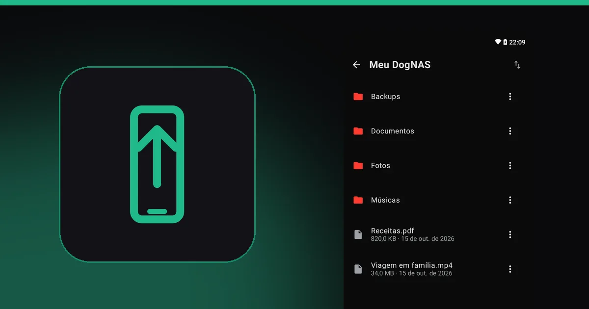
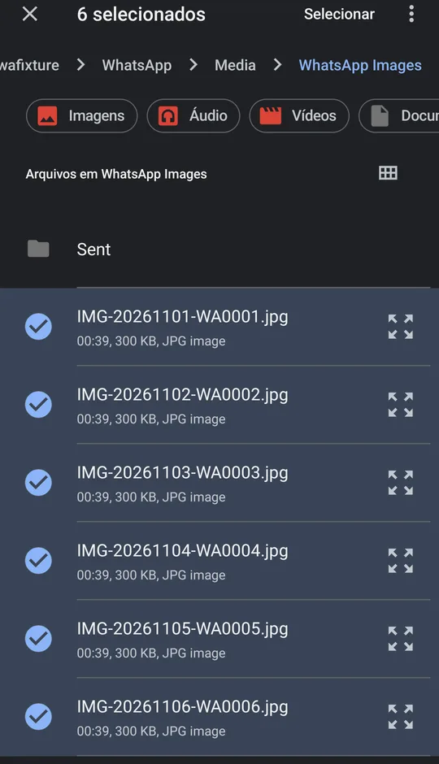

WhatsApp lotando o celular: como tirar fotos e vídeos sem perder as conversas
Testado em: Moto G100 · Android 12 · DogNAS Client 1.0.1 enviando para um servidor DogNAS (E13) · 2026-11-02

Neste artigo
O WhatsApp enche o celular porque, por padrão, baixa e guarda no aparelho as fotos, vídeos, áudios e documentos que passam pelos seus grupos, mesmo os que você nunca abriu. A saída que preserva o que importa é copiar essas mídias para um lugar seu, conferir, e só então apagar do celular. As conversas em texto continuam no app.
Por que o WhatsApp ocupa tanto espaço
Por padrão, o WhatsApp baixa automaticamente as fotos e, conforme a sua configuração, vídeos e documentos. Grupos de família, trabalho e condomínio mandam dezenas de arquivos por dia, e tudo fica no celular. Com o tempo, o app passa dos gigabytes sem você perceber.
O primeiro passo é ver o tamanho do problema: no WhatsApp, abra Configurações, Armazenamento e dados, e Gerenciar armazenamento. Ele lista as conversas que mais ocupam espaço e os arquivos grandes ou encaminhados muitas vezes. Os nomes dos menus mudam um pouco conforme a versão.
Onde ficam as mídias
Os caminhos dependem da versão do Android:
| Aspecto | Android 11 ou mais novo | Android 10 ou mais antigo |
|---|---|---|
Android/media/com.whatsapp/WhatsApp/Media | WhatsApp/Media | |
| WhatsApp Business | Android/media/com.whatsapp.w4b/WhatsApp Business/Media | WhatsApp Business/Media |
Dentro de Media há uma pasta por tipo: WhatsApp Images, WhatsApp Video, WhatsApp Audio, WhatsApp Voice Notes, WhatsApp Documents, e uma subpasta Sent com o que você enviou. Os nomes podem variar com o idioma e a versão do app.
Passo a passo com o DogNAS
Você precisa de um servidor DogNAS em casa. Um Android antigo serve de servidor de arquivos e, com um HD ou pendrive, o espaço cresce. No celular cheio, use o DogNAS Client (ou o mais leve DogNAS Client Lite), gratuito.
- Veja o que pesa. No WhatsApp, abra Gerenciar armazenamento e anote as conversas maiores.
- Crie uma pasta no servidor, por exemplo
WhatsApp-2026, e pareie o celular com o QR Code e o PIN do perfil. - Envie as mídias pelo botão Novo, Enviar. O seletor de arquivos abre no celular: navegue até a pasta de mídia, toque e segure em um arquivo, escolha "Selecionar tudo" e envie. Repita para cada pasta (
WhatsApp Images,WhatsApp Video, e, se quiser,DocumentseVoice Notes, além deSent). O envio é por arquivos, não por pasta inteira. A fila de transferências mostra o progresso e retoma se o Wi-Fi cair. - Confira no servidor. Abra algumas fotos e vídeos e compare o número e o tamanho dos arquivos com o celular.
- Só então apague do celular, pelo próprio WhatsApp (Gerenciar armazenamento) ou apagando as pastas copiadas.

Cuidados importantes
- Confira antes de apagar. É o passo que evita o arrependimento.
- Apagar a mídia mantém o texto, e a conversa mostra o arquivo como indisponível. Em alguns casos dá para baixar de novo, em outros não: depende de o arquivo ainda estar disponível para você. Conte que a sua cópia pode ser a única.
- Não é backup do WhatsApp. O backup do histórico de conversas é o do próprio app (Google Drive). O DogNAS guarda os arquivos de mídia que você copiar e não restaura conversas.
- Uma cópia só não é segurança. O DogNAS guarda no disco que você escolher. Para fotos insubstituíveis, tenha uma segunda cópia em outro lugar.
- Só na sua rede. O envio é pelo Wi-Fi de casa, com o servidor ligado e conectado.
- Espaço no servidor. O plano Grátis gerencia até 64 GB; vídeos de grupos podem somar muito, então veja quanto você precisa.
Evite que lote de novo
- No WhatsApp, em Armazenamento e dados, ajuste o download automático para só Wi-Fi ou desligue-o para vídeos e documentos.
- Silencie o download em grupos grandes.
- Repita a cópia de tempos em tempos, por exemplo uma vez por mês. O envio é manual hoje; uma cópia automática ainda não faz parte do DogNAS.
Perguntas frequentes
Posso apagar as mídias sem perder as conversas?
Sim. O texto fica; os arquivos apagados aparecem como indisponíveis. Por isso copie e confira antes.
O DogNAS guarda as minhas conversas do WhatsApp?
Não. Ele guarda só os arquivos de mídia que você copiar para o servidor. O histórico de conversas segue com as ferramentas do próprio WhatsApp.
E se o seletor não mostrar a pasta do WhatsApp?
Em Android novos, copie a pasta com um gerenciador de arquivos para Downloads e envie de lá.
Resumo
Veja o que o WhatsApp ocupa, copie as pastas de mídia para um servidor seu, confira e só então apague do celular. Se ainda não tem onde guardar, comece por como liberar espaço no celular Android e use um Android antigo como servidor.